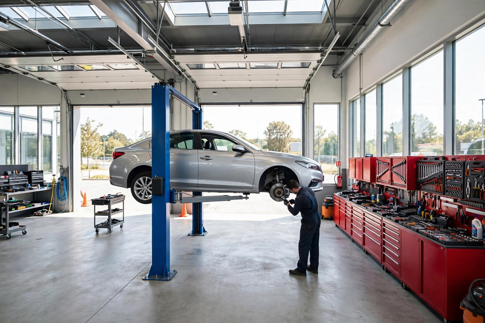
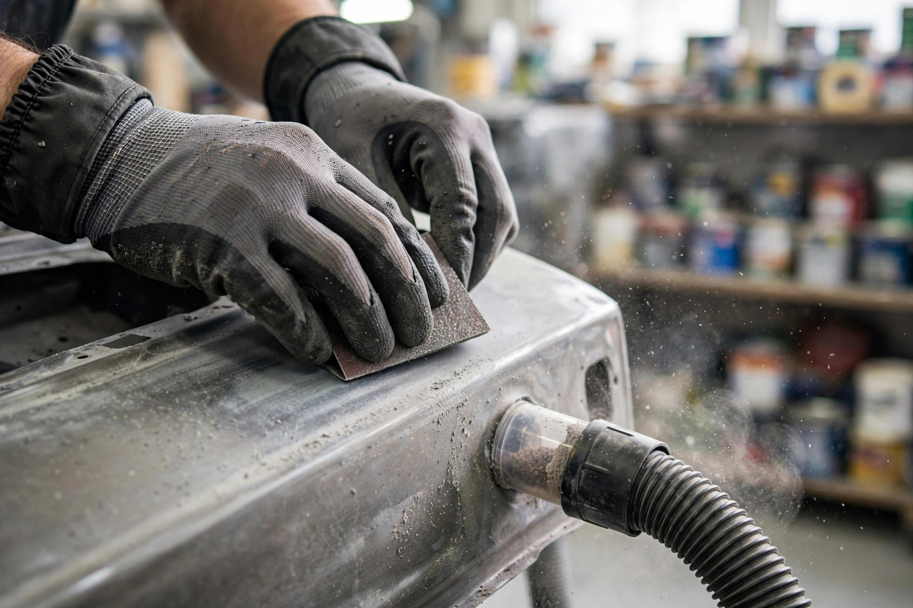
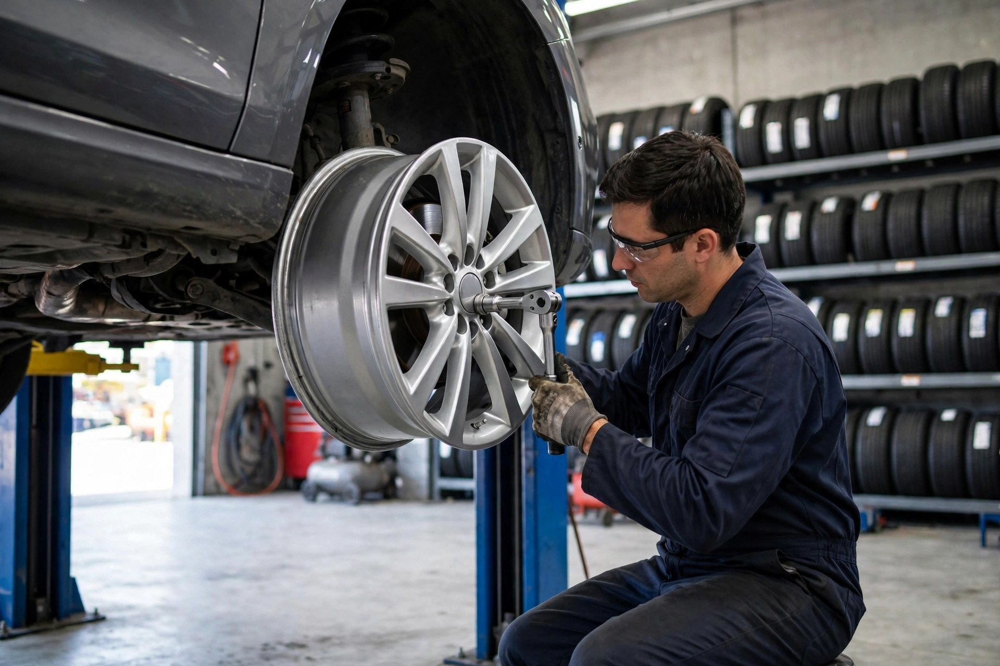
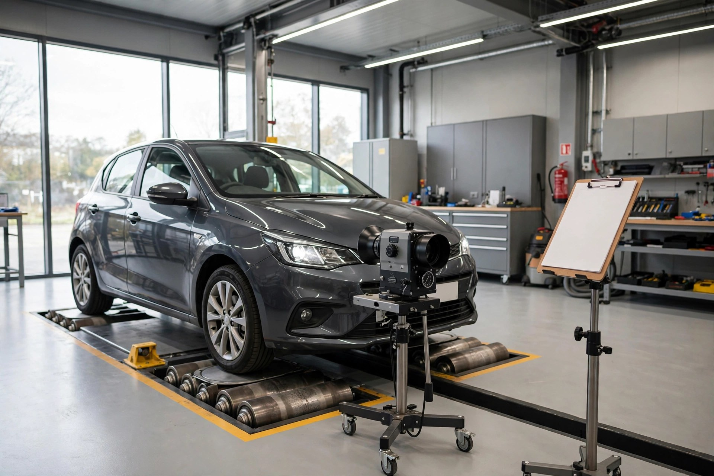

MOT testing
Annual MOT tests carried out on site — with free retests where applicable and clear pass/fail advice.

Aintree, Liverpool · Family-run auto repair & body shop
Forty years as a family-run garage: MOT testing, servicing, bodywork and recovery — honest advice and a clear price before any work starts.
What we do
Annual MOT tests carried out on site — with free retests where applicable and clear pass/fail advice.
Interim and full services for all makes and models, to manufacturer schedule, keeping your warranty valid.
Dents, scratches, resprays and full accident repair work — from minor scuffs to complete restorations.
Pads, discs, calipers and full clutch replacement — your safety checked and fixed properly.
Kerb damage, scuffs and corrosion stripped, repaired and refinished to a factory look.
Broke down nearby? Call us — we'll recover your vehicle to our workshop and get you moving again.

Why choose us
Four decades in the same family, in the same community. Our customers come back because they know exactly what they're getting: honest advice, fair prices and work done right.
The workshop in action


Find us
Good to know
You can book by phone on 0151 521 4852, or just call ahead on the day — we'll always do our best to fit MOT tests in while you wait.
Yes — all makes and models, from small hatchbacks to light commercial vehicles, serviced to manufacturer schedule.
Yes — from minor dents and scratches to full accident repairs, spraying and restorations, all done in-house.
Monday to Friday, 7 am to 5 pm. We're closed on Saturdays and Sundays.
Get in touch